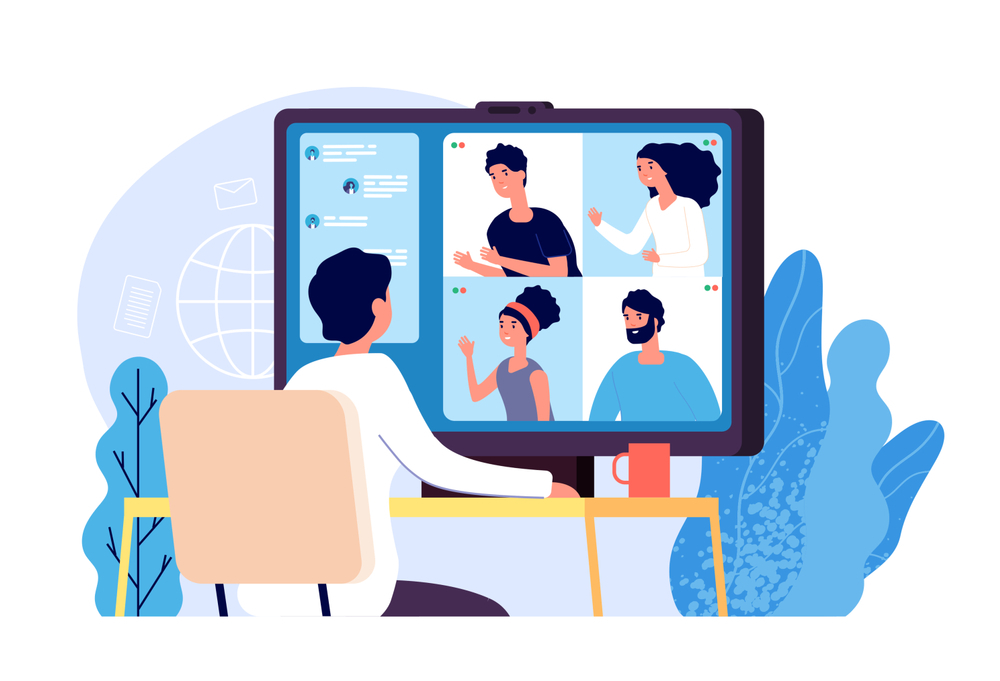

پیشنیازها
موردهای ضروری
-
در حال حاضر دانشجوی کارشناسی رشتهی مهندسی کامپیوتر یا علوم کامپیوتر
باشین*
-
درس برنامهسازی پیشرفته (Advanced Programming) دانشگاهتون رو گذرونده
باشین (یا در حال گذروندن اون در همین ترم باشین)
-
با توجه به فشرده بودن و مواجهه با چالشهای فنی متنوع، در طول دورهی
کارآموزی (از ۱ اسفند تا پایان اردیبهشت) بتونین روزانه از ساعت ۵ تا ۸:۳۰
بعد از ظهر شنبه تا چهارشنبه وقت بذارین
-
مشتاق رشد و عاشق سر و کله زدن با چالش های فنی باشین
-
از کار تیمی و آموختن مهارت های نرم لذت ببرین

موردهایی که ضروری نیستن ولی مفیدن
-
آشنایی با ساختمان داده و الگوریتم (Data Structures & Algorithms)
-
آشنایی با پایگاهداده
-
* اگه دانشجوی یکی از رشتههای نزدیک به کامپیوتر
مثل علوم ریاضی یا مهندسی برق هستین نگران نباشین، اگه برنامهسازی پیشرفته
رو گذروندین میتونین ثبت نام کنین!